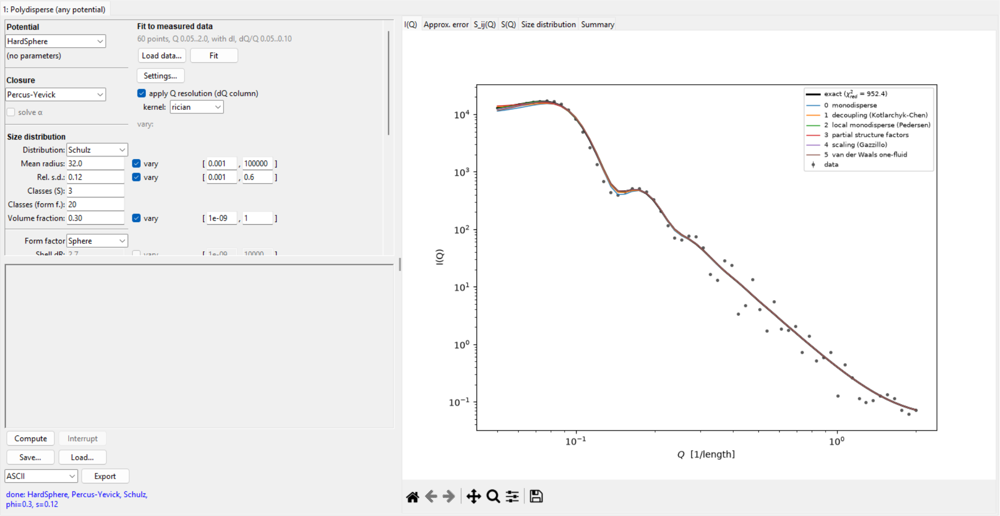
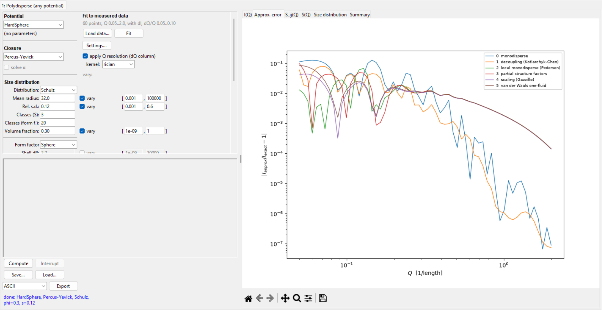
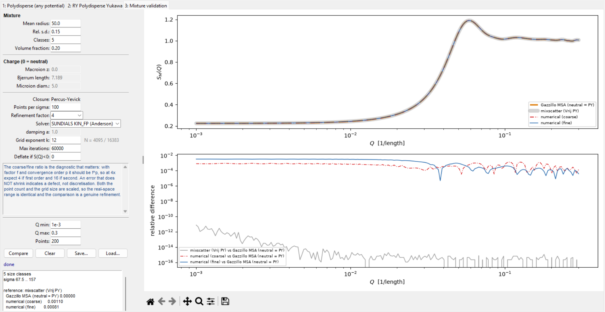
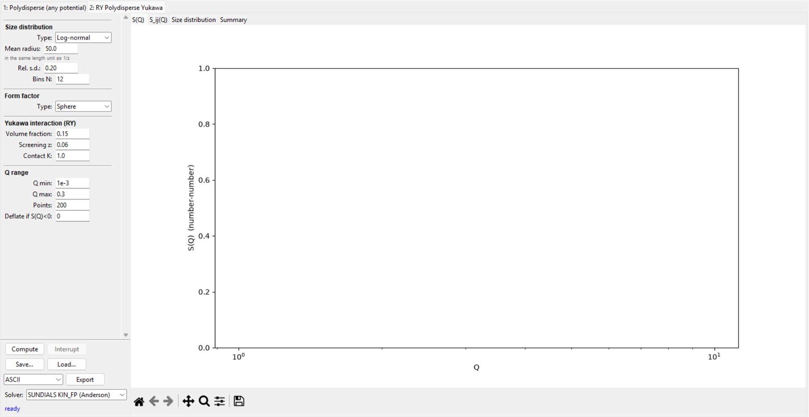

The graphical interface
pysasfit-oz (pysasfit.oz.gui.main_window) opens a notebook of tabs. The solver tab is built in, the rest are
registered in pysasfit.oz.gui.main_window.EXTRA_TABS and each is isolated by try/except, so an
import failure costs that one tab and nothing else.
tab |
purpose |
session file |
|---|---|---|
0: OZ solver |
one-component OZ, any potential and closure |
|
1: Polydisperse (any potential) |
polydisperse S(Q) and I(Q), fitting to data |
|
2: RY Polydisperse Yukawa |
charge-coupled Yukawa under Rogers–Young |
|
3: Mixture validation |
numerical against analytic references |
|
The number in each label comes from the widget’s own SESSION_TAB_INDEX, not
from its position in the registry — if a tab fails to import the others shift
up, and the label must keep matching what that tab’s own files claim.

The polydisperse tab. Each fittable quantity carries its value, a vary checkbox and its own pair of bounds on one row; parameters that do not apply to the current model are greyed across all four fields rather than hidden, so the layout does not reflow as options are toggled. The exact result is drawn together with all six approximation schemes and the measured data.

The approximation-error panel, for the same system. This is the comparison the software exists to make routine: the relative error of each scheme against the exact result, at the state point actually being fitted rather than at one taken from a paper. Note that the monodisperse and decoupling approximations improve steeply at high Q while the pair-sum schemes plateau near 1 per cent — which of them is acceptable depends on the Q range.

The mixture validation tab, which sets the numerical solver against analytic references and reports the coarse/fine ratio rather than only the size of the disagreement. Ordinary grid error falls roughly fourfold for a fourfold refinement; an error that does not shrink is a defect rather than resolution, which is how a fault giving every pair in a mixture the same hard core was eventually found.

The RY Polydisperse Yukawa tab. It is kept alongside the generic tab rather than subsumed by it because it carries per-distribution parameter fields — Gamma and Beta with their own shapes — which the generic route cannot express while everything there is pinned to (mean, srel).
These are generated, not collected. tools/gui_screenshots.py (pyOZgui, Tk version) recreated
all four; screenshots rot faster than any other kind of documentation, and a
stale one is worse than none because it teaches an interface that no longer
exists.
Adding a tab
One line in pysasfit.oz.gui.main_window.EXTRA_TABS:
("my_module", "MyTabClass", "My tab")
The class is a plain QtWidgets.QWidget (Qt port; see pysasfit.oz.gui.qtkit for the Tk-style variables and dialogs). Inheriting PolydisperseTabControls adds
the standard button row, run history, session save/load and export; a tab that
does not inherit it, as the mixture tab does not, simply carries its own.
For a session file, set SESSION_TAB_INDEX and SESSION_TAB_NAME on the
class and provide sessionState() / restoreSessionState(). The mixin calls
those only if they exist.
Session files
A save writes settings, the measured data including its resolution column, which parameters were free, any edited bounds, and the last fit result — everything needed to resume. It does not write the computed runs: those are regenerated by pressing Compute, and storing them was expensive out of all proportion. One partial structure factor is shaped (nQ, p, p), which at 200 q-points and 40 classes is 320 000 values per run; thirty runs produced a 196 MB file, enough to fill a disk after a few saves. Without them, and indented for legibility, the same session is 23 kB.
Saves are per tab, not global. The tabs hold different models with
different parameter sets, so one combined file would be a bag of unrelated
sessions and loading it would overwrite work in tabs you were not thinking
about. The extension carries the tab index (.oz1, .oz2, .oz3) and the
tab name is written inside and checked on load — a mismatch is refused
outright. Without that check, loading another tab’s file would set whichever
entries happened to share a name and silently ignore the rest, producing a
state half one model and half another and reporting success.
Edited bounds travel with the file deliberately: a limit narrowed from an independent measurement is knowledge about the sample rather than a preference.
During a fit
The plot and the parameter entries update about once a second with the best point so far — not the current trial point, which wanders and is alarming without being informative. A parameter walking steadily toward a bound, or refusing to move at all, is visible long before the fit ends.
The state is also written to restore.oz1 beside the data file at the same
rate, so a crash or a mistaken Interrupt does not lose a long fit. It goes
next to the data file, or failing that next to the session file, whichever is
writable; only if neither is are you asked where to put it.
Interrupt stops the fit between evaluations and returns the best point
found, not whatever was being probed. Whether the bumps and NLopt back ends
honour it has not been verified — worth knowing before starting a dream run
that may take hours.
Reading the parameter panel
Each fittable quantity has its value, a vary checkbox and its own pair of bounds on one row. Parameters that do not apply to the current model are greyed across all four fields rather than hidden, so the layout does not reflow as options are toggled.
The bounds are editable and are shown for a reason. A parameter pinned at a limit is a result — the data want to go where the model forbids — and that is invisible if the limit is. The built-in limits are the maximum domain: an edited bound may narrow the range, never widen it, and a value outside its own bounds is refused rather than silently clipped.
What is solved rather than fitted. Scale, background and the power-law amplitude enter the intensity linearly, so they are obtained exactly by weighted least squares at every iteration and never reach the nonlinear optimiser. Ticking them means “solve and show me”; unticking means “hold at the entry value”. A negative background is worth attention: it is the only term that can move the curve vertically, so it absorbs whatever the shape cannot match, and a negative one means the model overshoots.
The contrast is fitted as a ratio. The absolute scattering length
densities are perfectly correlated with the scale, so their magnitude carries
no information; what the data determine is ρ_shell/ρ_core, and above all its
sign. Fitting the ratio also makes it refine at all — in cm⁻² an SLD is ~10¹⁰
and least_squares stops on its gradient test after one evaluation at that
magnitude, returning the starting value with a meaningless uncertainty.
Choosing a solver
Prefer a fixed-point method. Near a fold the Jacobian is singular and the Newton–Krylov family is drawn onto negative-compressibility branches exactly where the fold lies. Measured at one Lennard-Jones state: the fixed-point family found g_max = 2.16 with min S(Q) = +0.21; the Newton–Krylov family found 1.13 and 1.22 with min S(Q) ≈ −38, all with residuals below 10⁻¹¹. They are all correct answers; one is physical.
Grid size and points per σ (tab 0)
Gridsize n sets N = 2ⁿ − 1 radial points (“auto”: n = 12, N = 4095). Points per σ sets the number of points per hard-sphere diameter (“auto”: 100). The grey text next to each field shows the value that “auto” stands for. Next to Points per σ it also shows the real-space range that follows, N / (points per σ) diameters: for example “= 100 (auto), r up to 40.95 σ”. More points per σ resolve the contact region better but shorten the range at fixed n. Slowly decaying potentials (small-κ Yukawa, DLVO tails) need a larger n.
Picard / Mann iteration and the damping a
Picard / Mann iteration (tabs 0, 1 and 3; called “Picard iteration” before, and the old name is still accepted in scripts and saved files) iterates the closure map T with a damping a:
x_{n+1} = (1 − a)·x_n + a·T(x_n), 0 < a ≤ 1.
a = 1 is plain Picard. It is the fastest form, but it diverges above about φ = 0.42 for hard spheres. Measured on a 1023-point grid, the iteration count grows geometrically and then the residual stays at 1.1 instead of decreasing. A density ramp does not help: the map is no longer a contraction, so the basin of attraction has vanished rather than moved.
a < 1 is Mann’s iteration (Mann 1953; Krasnoselskii for a constant a). Each step moves only part of the way to T(x). This damps the oscillation that makes Picard diverge. It costs about 1/a times more iterations, and the iteration limit is scaled by 1/a automatically (see below).
The damping must satisfy 0 < a ≤ 1. a = 0 would never move, and a > 1 over-relaxes, which amplifies the
oscillation. The field turns red for any other value, and calculate refuses it. ozLib.solve() and the
solver class raise ValueError for it, and the preference cannot be set outside the range.
Iteration limit: N/a
Tab 0 has no field for the iteration limit. The limit comes from the preferences (Settings → Preferences → Ornstein–Zernike → “OZ solvers”):
solver |
limit |
preference |
|---|---|---|
accelerated solvers (SUNDIALS, Anderson, MDIIS, Biggs–Andrews, Newton–Krylov) |
N_acc (factory 600) |
|
Picard / Mann |
⌈N/a⌉, N factory 5000 |
|
A damped step covers only the fraction a of the way to T(x). The number of iterations needed therefore grows
as 1/a: for hard spheres (PY, φ = 0.53) every converging a needs about 4170/a iterations (table below). The
Picard / Mann solver uses the configured N as the limit for a = 1 and runs up to ⌈N/a⌉ iterations. With the
factory N = 5000, that is 5000 at a = 1, 10000 at a = 0.5, and 25000 at a = 0.2. A grey line below the damping
field shows the limit that the next calculation will use, for example “iteration limit 25000 = 5000/a
(Preferences)”. The same scaling applies when a script passes maxIterations to ozLib.solve(), and to the
limits of the polydisperse and mixture tabs. In every case the number given is the limit for a = 1.
The scaling keeps the effort per unit of progress the same. It does not raise N itself. If a state needs more than N iterations already at the equivalent of a = 1 (φ = 0.53: about 4200), raise N in the preferences. With the former factory value N = 3000 a run at a = 0.2 stopped at 15000, while about 20100–20900 are needed. That, and the damped Picard / Mann verifier (below), is why the factory value is now 5000.
Measured for hard spheres under PY on a 1023-point grid (tab 0, no verification):
φ |
a |
iterations |
result |
|---|---|---|---|
0.30 |
1 / 0.7 / 0.5 / 0.3 |
337 / 487 / 687 / 1154 |
g_max = 2.321659 for every a |
0.45 |
1 |
20000 (limit) |
not converged; g_max = 3.73 at the stop |
0.45 |
0.7 / 0.5 / 0.3 |
2311 / 3240 / 5408 |
g_max = 3.963328, the same as scipy Anderson |
0.50 |
0.5 / 0.3 |
5776 / 9635 |
g_max = 4.868661 |
0.55 |
0.3 |
17917 |
g_max = 6.092301 |
The damping does not change the solution, only whether and how fast it is reached.
A result that seems to depend on a is an unfinished iteration. Hard spheres, PY, φ = 0.53, default grid (4095 points), compared with scipy Anderson (g_max = 5.556220, S(0) = 0.01149):
a |
1000 iterations (the tab’s former default limit) |
100000 iterations |
|---|---|---|
1.0 |
not converged, g_max = 6.77 |
not converged (oscillates) |
0.9 / 0.8 / 0.7 |
not converged, g_max = 5.11 / 5.22 / 5.67 |
not converged (oscillates) |
0.6 / 0.5 / 0.4 |
not converged, g_max = 5.49 / 5.45 / 5.37 |
converged in 6943 / 8334 / 10420, g_max = 5.556220 |
0.3 / 0.2 / 0.1 |
not converged, g_max = 5.23 / 4.95 / 4.35 |
converged in 13898 / 20852 / 41715, g_max = 5.556220 |
Two things limit a:
a too large (here a ≥ 0.7): the damped map still overshoots, and the iteration oscillates for ever.
a small: the iteration converges, but it needs about 4170/a iterations at this density. With a fixed limit of 1000 it stopped far from the solution, and a smaller a stopped farther away. The limit now scales as N/a, so a smaller a no longer runs out of iterations sooner, provided N ≳ 4200.
Every converged run gives the same solution, to 5·10⁻¹⁰ in S(Q). The iterate at the limit is not a solution.
The tab therefore marks such a run “[NOT CONVERGED]” in its label and shows a warning with the last relative
progress. It also stores the flag in the .oz file. If you see this, raise
oz.solvers.max_iterations_picard (or oz.solvers.max_iterations for the other solvers) in the preferences;
if the run still does not converge, lower a. With “verify against a second solver” on, the disagreement message now says
whether a run did not converge, instead of suggesting a second root.
In tab 0 the field damping a sits below the solver choice. Its start value comes from
Settings → Preferences → Ornstein–Zernike → oz.solve.mann_alpha (factory 1). The field is greyed for the
other solvers, which control their own step and would ignore it. When a < 1, the automatic run label ends in
“Mann a=…”. The solver and the damping are written to the saved .oz file, so a result can be reproduced.
When Picard / Mann serves as the verifier for another solver, it uses its own damping,
oz.solve.verify_mann_alpha (see “Verify against a second solver” below). Tabs 1 and 3 have the same field.
The convergence test is on the residual ‖T(x) − x‖/‖x‖, not on the damped step a·‖T(x) − x‖. Testing the step would stop 1/a times too early. At a = 1 the two are the same, so plain Picard results are unchanged.
Deflate if S(Q)<0
Present on every tab, defaulting to 0 (no retry). The check itself always runs: a result with min S(Q) < 0 is
marked “[S(Q)<0]” in the run list and a warning explains it; this setting decides whether the solver then
searches for a physical root. S(Q) is a variance and cannot be
negative, but nothing about the iteration detects a negative one: a solver
can converge to a residual of 10⁻¹³, report success, and sit on a
negative-compressibility branch. tools/residual_check.py finds all four
Newton–Krylov variants doing exactly that at one Lennard-Jones state point,
at min S(Q) = −38.96, where every fixed-point solver finds the correct root.
Each attempt excludes one more root and re-solves with the same solver. Switching to the other family would often work — the two favour different branches — but it would hand back a result from a solver you did not choose, and rely on a bias that happens to hold where it has been tested. If no physical root is reachable the error lists every root found with its min S(Q), because past a spinodal there may be none and that is information rather than a failure.
On the polydisperse tab it governs Compute only, never Fit. An optimiser wanders into unphysical territory as a matter of course, and rescuing some of those points and not others makes chi-squared jump between neighbouring parameter values — least squares assumes a smooth residual. Fit first, then recompute at the fitted parameters with this on if the answer looks wrong.
Verify against a second solver
On tab 0, on by default. The result is cross-checked against an independent
solver from a cold start before being returned; the log says
verifying with <name>, and the result returned is always your chosen
solver’s. It costs roughly eight times the solve — 0.0049 s against 0.0396 s
— which is why it can be switched off for a parameter sweep. For ordinary
use leave it on: a converged residual is not evidence the answer is right,
and this is the only check that catches a solver landing on a different root.
Residual check. Every calculation also re-applies the closure map to the returned solution. If the
relative residual exceeds oz.solve.residual_tolerance (factory 10⁻⁶), the run is marked “[NOT CONVERGED]”
even when the solver reported success; the warning gives the residual. See the manual, “The independent
residual check”.
Which verifier. A verifier must be independent of the solver it checks, or the two can share a failure mode and agree on a wrong answer. The verifiers are tried in this order:
Biggs–Andrews. A fixed-point method with vector extrapolation.
Picard / Mann, damped with a =
oz.solve.verify_mann_alpha(factory 0.5). Its limit is the Picard limit / a.
A verifier from the same algorithm family as the chosen solver is skipped:
family |
solvers |
|---|---|
Anderson/DIIS |
SUNDIALS Fixed-Point (Anderson), scipy Anderson, MDIIS |
vector extrapolation |
Biggs–Andrews |
Picard/Mann |
Picard / Mann iteration |
Newton–Krylov |
scipy and SUNDIALS Newton–Krylov |
Some members of the same family are deliberately not used as verifiers:
MDIIS and scipy Anderson are never used to verify the default solver. Pulay’s DIIS (MDIIS) and Anderson mixing are algebraically equivalent, so they would be the same method checking itself. MDIIS also fails at φ = 0.58, where KIN_FP converges.
Newton–Krylov methods are never verifiers. Near a fold they land on negative-compressibility roots (min S(Q) ≈ −38 at a Lennard-Jones state where every fixed-point method finds the physical root).
Only a converged verifier counts. A verifier that stops at its iteration limit is no reference, so the next one is tried. Each verifier uses its own limit from the preferences.
Picard / Mann is damped because Biggs–Andrews does not converge for dense hard spheres: at φ = 0.53 it fails even with 20000 iterations. Undamped Picard fails there too, so before this change a dense state had no working verifier. Damped with a = 0.5, Picard / Mann needs about 8300 iterations at φ = 0.53. The Picard limit was therefore raised from 3000 to 5000, which gives 10000 at a = 0.5. With this, the default solver at φ = 0.53 is verified by Picard / Mann, with a difference of 1.4·10⁻¹⁰.
If no verifier converges, the result is still shown, marked “[UNVERIFIED]”, with a warning that lists
what each verifier did. This is not a disagreement. A real disagreement between two converged solvers is
still an error, and the result is not shown. In scripts, ozLib.solve() raises VerificationUnavailable
with the unverified result as .result. A verified result records the verifier in OZResult.verifiedWith
and the relative difference in verificationDifference.
Choosing a fitter
scipy least_squares is right for routine work — a bounded trust region
converging in some thirty model evaluations. The alternatives cost far more,
because every evaluation is a full OZ solve: 0.05 s for one component but
2.5 s at seven size classes.
fitter |
evaluations |
at 2.5 s each |
|---|---|---|
least_squares |
~30 |
~1 minute |
amoeba |
~200 |
~8 minutes |
de |
~2000 |
~1.5 hours |
dream |
~10000+ |
~7 hours |
They earn their place in two situations: dream samples a posterior and
returns a correlation matrix, which is the only honest way to see how many of
eleven nominally free parameters the data actually determine; and a population
method can cross between minima that a local one cannot. Run them once on a
converged fit, and reduce the size classes first.
bumps lm ignores bounds — it is scipy’s Levenberg–Marquardt, which has
no bounded variant. Most parameters here are bounded, so the bound fields grey
out and a warning appears when it is selected.
nlopt ... (constrained) exists for one thing: constraints relating
several parameters, which no box bound can express. The concrete one is that
the shell must fit inside the smallest core class, ΔR < R(1 − n·s). Without
it an unconstrained fit on synthetic data drove the shell to 0.84 against a
limit of 0.63 — thicker than the core it sits on — while the constrained fit
found the right answer with a lower χ².
Hover help
Every entry shows a line in the box at the foot of the panel. The text stays on the last thing hovered rather than blanking as the cursor moves, and the box is sized for its longest entry so the panel does not shift underneath the pointer.
Settings
Grid exponent k, points per diameter, iteration budget and transform type sit in a dialog rather than the main panel, being set once for a study. N is entered as the exponent and shown as a derived value, so an inefficient grid cannot be chosen by accident: a DST-I goes through an FFT of length 2(N+1) and wants N = 2^k − 1, a DST-IV is a length-N transform and wants N = 2^k, and choosing by hand made the second-order transform benchmark slower than the first-order one for some time.